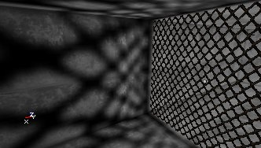
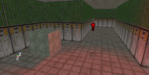

UDN
Search public documentation:
LightingOnSurfacesJP
English Translation
한국어
Interested in the Unreal Engine?
Visit the Unreal Technology site.
Looking for jobs and company info?
Check out the Epic games site.
Questions about support via UDN?
Contact the UDN Staff
한국어
Interested in the Unreal Engine?
Visit the Unreal Technology site.
Looking for jobs and company info?
Check out the Epic games site.
Questions about support via UDN?
Contact the UDN Staff
サーフェスの照明
概要：多種多様なジオメトリに対してLightActors（ライトアクタ）が及ぼす効果についてご説明します。 修正ログ：最終更新者Jason Lents（DemiurgeStudios）により管理しやすいよう文書を分割。原著者Lode Vandevenne（Udnスタッフ）はじめに
ライトがジオメトリに与える効果は、ジオメトリの種類により異なります。このページでは、他の機能を最大限に生かしつつ、アーチファクトに不満が残ることのないように、ライトの多様性を生かす方法を概説します。BSPの照明
Rebuild Lighting（ライティングのリビルド）の処理中に、エディタによりBSPサーフェス上にライトマップが作成されます。これによってサーフェス上には非常に現実的なシャドウが生成されますが、細密なシャドウディテールがあれば更にリアルなシャドウになります。このライトマップの利点は見栄えが良いことです。一方欠点は、リアルタイムに演算処理できないところです。StaticMesh（静的メッシュ）のDisplay Properties（表示プロパティ）で、bShadowCast = True（有効）と設定されている場合、BSPサーフェスは他のBSPサーフェスやStaticMesh（静的メッシュ）からシャドウを受け取ります。 ライトはソリッド、セミソリッドおよび非ソリッドのブラシによりさえぎられます。片面シートブラシの非表示側は光を通しますが、反対側は通しません。また、シートでない非ソリッドの内側に配置されたライトは透過します。
ライトは透光性サーフェスを透過しますが、モジュール化されたサーフェスを透過しません。ライトが透光性サーフェスを透過する際、全くサーフェスが無いかのように抜けていきます。透光性サーフェスは着色されません。ライトの光線がマスクされたテクスチャの非表示部を透過するため、シャドウはマスクされたテクスチャの形状を形取ります。
ライトはソリッド、セミソリッドおよび非ソリッドのブラシによりさえぎられます。片面シートブラシの非表示側は光を通しますが、反対側は通しません。また、シートでない非ソリッドの内側に配置されたライトは透過します。
ライトは透光性サーフェスを透過しますが、モジュール化されたサーフェスを透過しません。ライトが透光性サーフェスを透過する際、全くサーフェスが無いかのように抜けていきます。透光性サーフェスは着色されません。ライトの光線がマスクされたテクスチャの非表示部を透過するため、シャドウはマスクされたテクスチャの形状を形取ります。

ライトのリビルドにより、マスクしたテクスチャが黒くなってしまうことがあります。その場合は、[Unlit]（アンリット）と設定すれば元に戻ります。 照明によって透光性サーフェスの光の透過度も決まります。つまり、ライトが強くなるほど透明感が薄れてはっきり見える一方、ライトが弱くなるほど見えにくくなります。マップに透光性サーフェスがあり、透過度の強弱を調整したい場合は、周囲の照明に照らされないよう独立させて[Special Lit]（特殊リット）に設定し、[bSpecialLit]（b特殊リット）のライトを隣に追加して、このライトを用いて透過度を調整します。例えば下のイメージをご覧下さい。この部屋の中心には実は透過性サーフェスがあるのですが、全く照らされていません。非透光性サーフェスが黒くなってしまう状況なら、非表示となります。 このライトのLightBrightness（ライトの明度）を高くするほど、サーフェスがはっきりと見えてきます。
このライトのLightBrightness（ライトの明度）を高くするほど、サーフェスがはっきりと見えてきます。


 着色光なら、より一層の効果が狙えます。
着色光なら、より一層の効果が狙えます。

StaticMesh（静的メッシュ）の照明
StaticMesh（静的メッシュ）で最善の結果を得るには、Rebuild Lighting（ライティングのリビルド）が必要です。ライティングはStaticMesh（静的メッシュ）の各サーフェスごとに演算されるため、ライトに面しているサーフェスのみ照明されます。例えば、イメージにある小さなStaticMesh（静的メッシュ）のキューブを見てみましょう。
これは、StaticMesh（静的メッシュ）上にライトマップがないので、BSPサーフェスのような上質のシャドウが得られていない例です。例えばこの画面では、左下にあるブラシはStaticMesh（静的メッシュ）で、上側のブラシはBSPです（つまり、いずれもデフォルトのエンジンテクスチャが貼られています）。シャドウを作成するために、ライトの正面にバーが設置されていますが、StaticMesh（静的メッシュ）上にはこのバーのシャドウが見えません。 StaticMesh（静的メッシュ）を移動できる（つまり、アクタがDefault Properties（デフォルトのプロパティ）でbStatic = False（無効）と設定されている）場合、照明はStaticMesh（静的メッシュ）上でリアルタイムに演算されます。ですから、このメッシュがライトに向かって移動すれば、メッシュはより明るくなります。
StaticMesh（静的メッシュ）自身もBSP上にシャドウを生成しますが、他のStaticMesh（静的メッシュ）やそれ自体には生成しません。
StaticMeshの照明は、ピボットポイントにではなく境界ボックスに依存するため、ピボットボックスを自由に操作できます。
ブラシをStaticMesh（静的メッシュ）に変換すると、[Special Lit]（特殊リット）の設定が失われるため、StaticMesh（静的メッシュ）での[Special Lit]（特殊リット）使用は不可能です。一方、[Unlit]（アンリット）は作動しますが、BSPブラシ上でアンリットになっていたサーフェスはすべてStaticMesh（静的メッシュ）でもUnlit（アンリット）になります。
ライトのコロナにStaticMesh（静的メッシュ）を透過させたい（例えば、ランプの中にコロナを配置する）場合は、StaticMesh（静的メッシュ）のbBlockZeroExtentTraces（ゼロエクステントトレースをブロックする）をFalse（無効）に設定します。こうして初めてコロナが現れます。もちろん、[Display]（表示）の[bShadowCast]（bシャドウをかける）もFalse（無効）に設定しますので、ライトはStaticMesh（静的メッシュ）を透過することができます。
StaticMesh（静的メッシュ）を移動できる（つまり、アクタがDefault Properties（デフォルトのプロパティ）でbStatic = False（無効）と設定されている）場合、照明はStaticMesh（静的メッシュ）上でリアルタイムに演算されます。ですから、このメッシュがライトに向かって移動すれば、メッシュはより明るくなります。
StaticMesh（静的メッシュ）自身もBSP上にシャドウを生成しますが、他のStaticMesh（静的メッシュ）やそれ自体には生成しません。
StaticMeshの照明は、ピボットポイントにではなく境界ボックスに依存するため、ピボットボックスを自由に操作できます。
ブラシをStaticMesh（静的メッシュ）に変換すると、[Special Lit]（特殊リット）の設定が失われるため、StaticMesh（静的メッシュ）での[Special Lit]（特殊リット）使用は不可能です。一方、[Unlit]（アンリット）は作動しますが、BSPブラシ上でアンリットになっていたサーフェスはすべてStaticMesh（静的メッシュ）でもUnlit（アンリット）になります。
ライトのコロナにStaticMesh（静的メッシュ）を透過させたい（例えば、ランプの中にコロナを配置する）場合は、StaticMesh（静的メッシュ）のbBlockZeroExtentTraces（ゼロエクステントトレースをブロックする）をFalse（無効）に設定します。こうして初めてコロナが現れます。もちろん、[Display]（表示）の[bShadowCast]（bシャドウをかける）もFalse（無効）に設定しますので、ライトはStaticMesh（静的メッシュ）を透過することができます。

メッシュの照明
メッシュ上での照明は、StaticMesh（静的メッシュ）の照明と非常に似ています。メッシュの照明はリアルタイムで行います。 メッシュのプロパティで[Display]（表示）を展開します。そこで、AmbientGlow（環境輝度）を使ってメッシュを明るくできます。例えば、メッシュのAmbientGlow（環境輝度）を「128」に設定すると、「0」の時より遥かに明るくなります。AmbientGlow（環境輝度）を255となると、メッシュは最高明度に達します。イメージには、AmbientGlow（環境輝度）が「0」、「128」、そして「255」の例が表示されています。
メッシュのプロパティで[Display]（表示）を展開します。そこで、AmbientGlow（環境輝度）を使ってメッシュを明るくできます。例えば、メッシュのAmbientGlow（環境輝度）を「128」に設定すると、「0」の時より遥かに明るくなります。AmbientGlow（環境輝度）を255となると、メッシュは最高明度に達します。イメージには、AmbientGlow（環境輝度）が「0」、「128」、そして「255」の例が表示されています。
 また、[Display]（表示）にはbUnlit（bアンリット）プロパティもあります。これをTrue（有効）に設定すると、メッシュはすべての照明を無視し、その明るさはAmbientGlow（環境輝度）のみにより決まります。
また、[Display]（表示）にはbUnlit（bアンリット）プロパティもあります。これをTrue（有効）に設定すると、メッシュはすべての照明を無視し、その明るさはAmbientGlow（環境輝度）のみにより決まります。

テレインの照明
テレインの照明で最も重要な方法はSunLight（太陽光）です。実際、SunLight（太陽光）はテレインに不可欠です。使わなければ、テレインは変化に乏しいつまらないものになってしまいます。例えば一番目のイメージでは、SunLight（太陽光）が無くAmbient Lighting（環境照明）だけです。二番目のイメージでは、SunLight（太陽光）とAmbient Lighting（環境照明）の両方が使われています。
 Ambient Lighting（環境照明）（ZoneLight）は、テレインのシャドウ部分を明るくするのに使用します。通常の照明でもテレインは明るくなるのですが、それによりテレインを十分に照らすには無数のライトアクタが必要となります。
Ambient Lighting（環境照明）（ZoneLight）は、テレインのシャドウ部分を明るくするのに使用します。通常の照明でもテレインは明るくなるのですが、それによりテレインを十分に照らすには無数のライトアクタが必要となります。